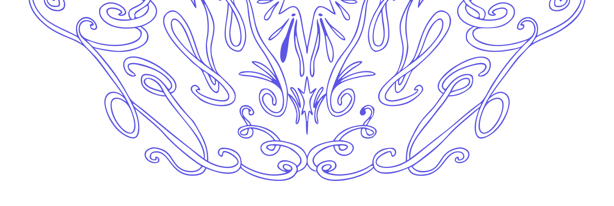

catalina oyanedel
portafolio multidisciplinar.
en mis proyectos me inspiro principalmente desde la naturaleza, lo mágico y los fenómenos sociales. parte importante de mis propuestas van de la mano con la importancia del relato y la experiencia.
conoce más en profundidad aquí !